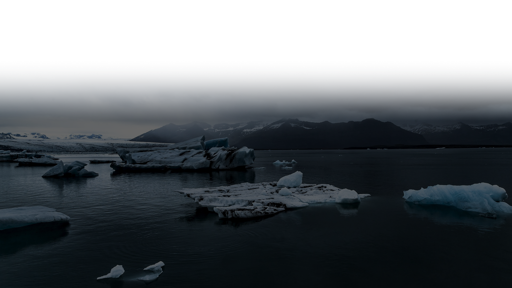

전문가들은 신종 바이러스가 나타나는 원인을 기후변화에서 찾고 있습니다.
WHO도 평균 기온이
1도 올라갈 때마다 감염병이 4.7% 늘어난다며 “기후변화가 전염병을 부른다”라고 경고했습니다.
팬데믹은 국경을 넘어서 영향을 미칠 수 있는 문제이므로 국제적인 협력이 필요하다. 과학자, 정 부 및 국제기구들은 정보 공유, 자원 공동 활용, 연구 협력 등을 통해 효과적인 예방 및 대응 전 략을 개발해야 한다.
고대 바이러스의 특성과 위험성을 연구하고 감시를 강화하여 빙하가 녹는 과정이나 환경 변화로 인해 고대 바이러스가 녹아 나오는 경우를 감지하고 조기에 대응할 수 있도록 해야 한다.
바이러스의 위험성과 예방 방법에 대한 교육이 필요하다. 정확하고 신뢰할 수 있는 정보를 제공 하고, 개인 위생 수칙과 바이러스에 대한 인식을 개선하는데 집중해야 한다.
멸망하는 것은 지구가 아닌 인류이다. 지구는 또다른 생명체를 만들어 낼 것이다.
